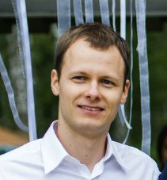

 Kirill Lykov
About this blog
This blog was created to save thoughts about programming and some tips&tricks I found while working. Hence, it is about things I’m doing for work or for fun - C++, HPC, Computer Vision, LAMMPS, teaching Java.
About me
I’m an enthusiastic programmer and a researcher. I enjoy solving challenging problems as well as learning new fields and technologies.
I started writing programs when I was 15 and still like it! When I was 20 years old I already got my first Software Engineer position.
I took part into developing software for CAD and GIS industries (check CV for details). At the same time I graduated from Mathematical
department of Novosibirsk State University. It is not big or famous but such mathematitians as Markov, Godunov, Sobolev, Zelmanov were
working there, and it has still strong fundamental mathematical education. Being both mathematician and programmer I’m interested in fields where
these two worlds are intersecting - high performance computations, fluid dynamics, computer vision, shape analysis, and physical based
computer graphics. Check out my blog posts and github and let me know if you have some ideas of collaboration regarding things I’m interested in.
University of Italian Switzerland
Institute of Computational Science
Lugano, Switzerland
Email: lykov dot kirill at gmail dot com
CV